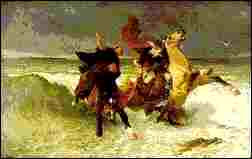

Livadenn Gêr-Iz
Ton

1. Ha glevaz-te, ha glevaz-te
Pez a lavaraz den Doue
D'ar roue Gradlon en Iz be?
2. Arabat eo en em barat!
Arabat eo arabadiat!
Goude levenez, kalonad!
3. Neb a beg e kig ar pesked,
Gant ar pesked a vo peget,
Ha neb a lonk a vo lonket.
4. Ha neb a ev ha gwin a vesk,
A evo dour evel ur pesk;
Ha neb na oar a gavo desk.
5. Ar roue Gradlon a venne:
- Koanourien da, da eo ganeoc'h
Moned da gouskiñ ur banne.
6. - Da gouskin afec'h antronoz;
Manit-c'hwi ganeomp-ni fennoz:
Hogen pa vennit-ch'wi, bennoz!
7. Serc'heg a gomze war ma oue
Flourik-flour ouzh merc'h ar Roue :
- Klouar Dahut, nag an alc'hwez?
8. - An alc'hwez a vezo tennet ;
Ar puñs a vezo dibrennet;
Pezh a youlit-c'hwi ra vo graet !
III
9. Hag an neb en-defe gwelet
Ar Roue kozh war e gousked
Meurbet vije bet souezhet
10. Souezhet gant e bali moug
Hag e vlev gwenn-kann war e choug
E alc'hwez aour e-kerc'h 'n e c'houg
11. Neb a vije bet er c'hedenn
En defe gwelet ar verc'h wenn
Goustad o vont tre, diarc'hen
12. Tostaat 'rae ouzh he zad roue
Ha war he daoulin 'n em stoue
Ha riblañ 'rae sug hag alc'hwez
IV
13. Atav e hun, e hun an ner
Ken a gleved hed al laouer :
- Laosket ar puñs! Beuzet ar gêr!
14. - Aotrou Roue! Sav diallen !
Ha war da varc'h! ha kuit a-grenn !
Ma'r mor o redek dreist e lenn!
15. Bezet milliget ar verc'h wenn
A zi-alc'hwezas, goude koan,
Gorre puñs Kêr-Iz, mor termen!
V
16. - Koadour, koadour, lavar din-me,
Marc'h gouez Gradlon a welas-te
O vont e-biou gant ar zaon-mañ?
17. - Marc'h Gradlon dre-mañ na welis,
Nemet en noz du e glevis:
Trip-trep, trip-trep, trip-trep; tan-tizh!
18. - Gwelas-te 'r morverc'h, pesketour,
O kribañ he blev melen-aour,
Dre an heol splann, e ribl an dour?
19. - Gwelout a ris ar morverc'h wenn ;
M'he c'hlevis o kanañ zoken:
Klemmvanus ton he kanaouenn.
Bez' ez eus ur werz all war-benn an hevelep marvailh: Klik amañ